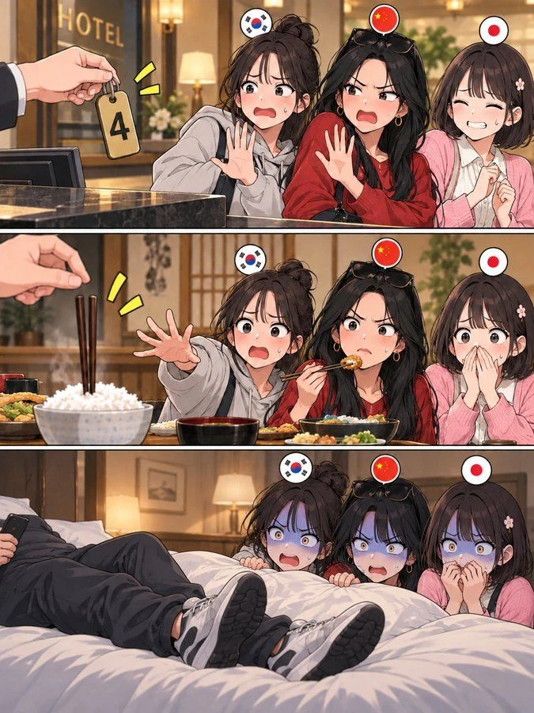
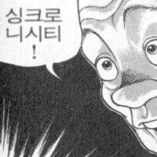

한중일 사람들 화나게 하기
댓글
4는 죽을사 때문에 그러나
한중일 3국다 4가 죽을사랑 발음이 같음 ㅋㅋㅋ
ㅇㅇ 중국어 일본어 다 죽을 사랑 발음 같음
사 쓰 시
한 중 일 각각 다 죽음 사(死)이랑 발음이 같음
그건 바로 四가 死랑 발음이 같으니까요.

아닐수도있었어 당연한듯이 말할필요는 없음. 한자기반인데 애초에 적는게 다른데 꼭 같을필요는 없는데 우연인거지
우연아님 셋다 한자 발음임. 우리말로 넷이고 일본은 욘이 따로 있음. 한자어 발음 '사'라서 같은거 맞음
전혀 안그렇다
10 십十 시간 시 时 로 중국어발음은 shi로 같은데 우리는 다르게 발음하기도하고
또 반대로 열 개 开。개조할때 개改 kai gai로 우리발음은 같은데 중국발음은 다름
중국어 발음 쓰 가 같다고 한국어발음 사 일본어 시 가 같아야할 이유가 없음.
고대어 흐름까지 봐야겠다만 '쓰'가 사로 되는 과정은 동일합니다. 억지그만부려 학생. 자국어에 없는 중국발음을 최대한 유사하게 음차하려는 규칙때문에 생긴거지 우연히 끼워맞춰진게 아니란다.
과정이 동일한거 알겠는데 나는 그걸 부정하는게 아니라ㅋㅋㅋㅋㅋㅋ
너는 두 의미가 다른글자가, 쓰 라는 발음이 같기때문에 우리도 사 라고 발음한다는거잖아?
그게 아니고 의미가 다르기때문에 발음이 같은건 정말 우연이고, 의미가 다르기때문에 우리쪽으로 넘어오면서 발음이 변화하게되는것 또한 다르게 변화할수 있다는거임.
단순하게 발음이 같다고 발음변화가 같을수는 없음. 우연일 뿐이고
니 주장을 강화하려면 숫자4와 죽을 사 에서 의미적 유사성이나 유의미한 관계성을 찾아야할거임
니가 말하는 음차하려는 규칙이 없다는게 아니라 그럼 10과 시간 시 가 왜 발음이 달라졌는지 설명해야하고
발음이 같아서 발음변화가 같은 사례가 대다수고 니가 지적한 몇건이 오히려 예외 사례인데. 뭘 설명하란거야? 예외적인 것들이 모여서 우연을 만든게 아니라 보편적인 것들이 만들어낸 보편적인 현상이라 설명하는데 이해안됨? 고대 언어발음과 사용에 따라 음차하는데 예외가 나올 수도 있지만. 죽을 사와 넷 사는 지극히 평범한 음차규칙으로 동음이의어가 된거라고
뭔 평범한 음차야... 애초에 성조가 다른데 두개가...병음만 같은 다른발음인데 같게 들어온거 뿐이야ㅋㅋㅋㅋㅋㅋㅋ
뭔 우연 죽을 사 맞는디
이해못하셨으면 지나가셔도 됩니다
니말이 맞음. 한국에서 발음이 서로 같은 한자가 중국어/일본어에서 서로 다른경우 조온나게 많지 ㅋㅋ
화내지 마세요
에미가 뒈져서 저럴 뿐입니다
전혀 그대 잘못 아닙니다
저능아들 상대해주느라 고생이 많다 ㅋㅋ
둘이 말하는게 둘다 핀트만 엇나간거 같아서 따로 astra로 조사를 시켜봤는데 결론이 이렇게 나옴.
"四와 死가 애초에 의미와 관계없이 중국어에서 서로 매우 비슷한 음가를 갖게 된 것은 역사적으로 우연적인 합류라고 할 수 있지만, 그 결과 한국어에서 둘 다 ‘사’, 일본어에서 둘 다 ‘시’가 된 것은 서로 독립적으로 발생한 우연이 아니라 동일한 중국어 음운적 기반을 반영한 결과다."
https://chatgpt.com/share/6aa2bea3-a5a0-83e9-8d6c-e8ab4aad5d71?ogimg=plain
를 참고해주셈. 어느쪽이 더 맞는건지 언어학적으로 궁금해서 한번 시켜봤음..
테트라포비아...
신발은 시발
제미나이야 이 내용을 토대로 캐릭터를 국기무스메로 바꿔서 그려줘
아니 침대에 신발은 ㅅㅂ
중국은 4 좋아 하지 않음?
8 아님?
4885
중국은 88이 돈벌린대서 좋아함.
중국은 8
1 2번은 상관없으니 신발은 쳐벗어라ㅋㅋㅋㅋㅋ
신발이 젤 긁히네
저기도 제삿밥일걸?
아니 그새 댓글을 달았노 ㅋㅋ 나도 제목 다시 보고 깨달아서 지운건데 ㅎㅎ
침대에 저러고 있으니까 갱뱅하는 것 같네
밥짤은 이새끼가 처 돌았나 싶네 ㅋㅋ
후드, 빨간색 옷, 단발에 가디건
포인트 잘 잡았네
궁금한게 서구권 아닌데서도 신발신고 저ㅈㄹ함??

은근히 베트남도 비슷함 ㅋㅋㅋ
중국 영향 많이 받아서 ㅋㅋ 추석 보내는 것도 일본 아니라 베트남임 ㅋㅋ
베트남도 죽을 사랑 숫자4랑 한자 발음은 같은데 고유어 쪽(우리로 치면 넷)을 주로 써서 이런 미신은 없대
1번은 별 신경안쓰이고 2번은 뭐.. 잘 모르나보다 하면 그럴수 있는데 3번은 진짜 씁박어디 전지톱 없나 찾아볼듯
신발은 진짜 ㄹㅇ 혐오임
신발신고 안방까지 들어오는걸 허락했다고?
요즘 제사 잘 안지낸다더라고
침대 신발은 문화차이가 아니라 미개한게 맞지ㅋㅋ
신발벗어 제발